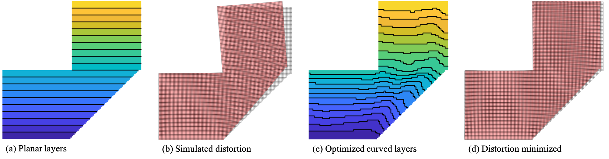

Fabrication Sequence Optimization for Minimizing Distortion in Multi-Axis Additive Manufacturing
Computer Methods in Applied Mechanics and Engineering, 2023
| Weiming Wang | Fred van Keulen | Jun Wu |
| TU Delft | TU Delft | TU Delft |

Abstract
Additive manufacturing of metal parts involves phase transformations and high temperature gradients which lead to uneven thermal expansion and contraction, and, consequently, distortion of the fabricated components. The distortion has a great influence on the structural performance and dimensional accuracy, e.g., for assembly. It is therefore of critical importance to model, predict and, ultimately, reduce distortion. In this paper, we present a computational framework for fabrication sequence optimization to minimize distortion in multi-axis additive manufacturing (e.g., robotic wire arc additive manufacturing), in which the fabrication sequence is not limited to planar layers only. We encode the fabrication sequence by a continuous pseudo-time field, and optimize it using gradient-based numerical optimization. To demonstrate this framework, we adopt a computationally tractable yet reasonably accurate model to mimic the material shrinkage in metal additive manufacturing and thus to predict the distortion of the fabricated components. Numerical studies show that optimized curved layers can reduce distortion by orders of magnitude as compared to their planar counterparts.Keywords
Fabrication sequence; Multi-axis additive manufacturing; Wire arc additive manufacturing; Thermal distortion; Process planning; Topology optimizationDownload
 |
Paper 18.8 MB |
Bibtex
@article{Wang2023CMAME,
title={Fabrication Sequence Optimization for Minimizing Distortion in Multi-Axis Additive Manufacturing},
author={Weiming Wang and Fred van Keulen and Jun Wu},
journal={Computer Methods in Applied Mechanics and Engineering},
volume={406},
pages={115899},
year={2023},
doi={https://doi.org/10.1016/j.cma.2023.115899},
issn = {0045-7825}
}